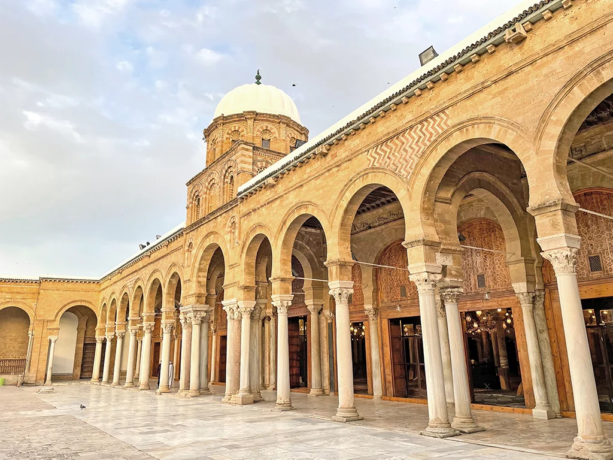
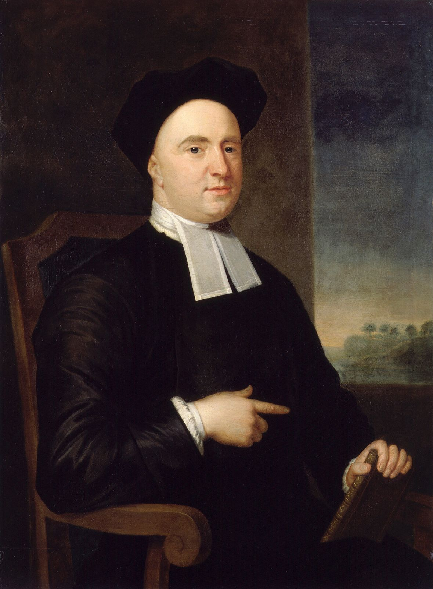
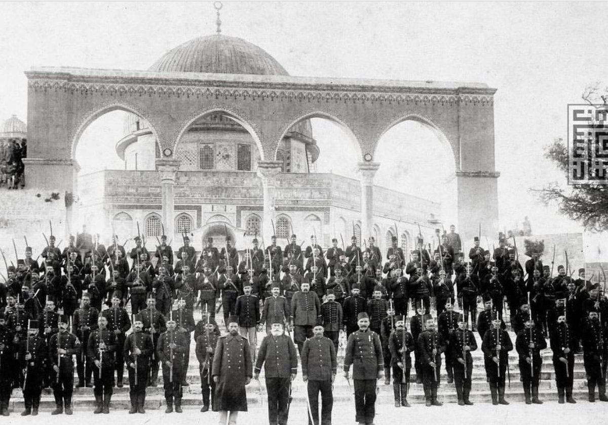

/ Blog
Yazılar, notlar ve üretim kayıtları
Oyun geliştirme, web teknolojileri, Kuran23, dijital ürünler, ajans faaliyetleri, felsefi denemeler ve üretim disiplini üzerine düzenli yayın alanı.

Unvansızlar Cemiyeti; Diplomasız Bir Hakikat Ekolojisi
Farabi, İbn Sina ve Gazali'nin terbiye anlayışından hareketle; günümüz akademisine, unvansızlık ve bütüncül hakikat anlayışına dair felsefi bir sorgulama.

Meçhul Hakikatin Biçimsiz Tasvirlerinde: İmmateryalizm ve Berkeley'in İidealizmi
Putperestlerin tanrıtanımaz eğilimleri, algısal estetik ve George Berkeley’in varoluş ilkesi üzerine felsefi bir sorgulama.

Barzakh: Star Gardener Oyunu ve Etkileşimli Kıssanın Gaybî Eşikleri Üzerine
Dede Korkut, Küçük Prens, Dante ve tasavvufî eşikler üzerinden Barzakh anlatısına uzun bir okuma.

Commentarius Perpetuus in "Uniqus Martyrium"
Keder, idrak, yalnızlık ve modern düşünmenin çözülüşü üzerine felsefi ve edebi bir deneme.